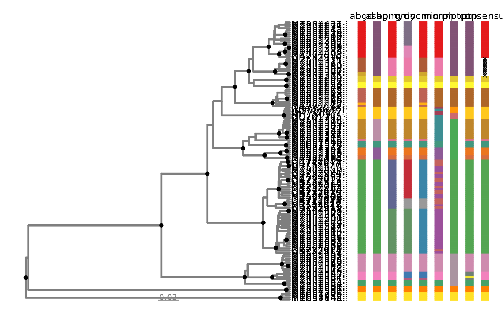

Plot Phylogenetic Trees With Species Delimitation Partitions
Source:R/delim_autoplot.R
delim_autoplot.Rddelim_autoplot() returns a phylogenetic tree plotted using ggtree alongside
with a customized tile plot using geom_tile combined by
wrap_plots.
Usage
delim_autoplot(
delim,
tr,
consensus = TRUE,
n_match = NULL,
delim_order = NULL,
tbl_labs = NULL,
col_vec = NULL,
hexpand = 0.1,
widths = c(0.5, 0.2)
)Arguments
- delim
Output from delim_join.
- tr
A treedata object. Both phylogram and ultrametric trees are supported.
- consensus
Logical. Should the majority-vote consensus to be estimated?
- n_match
An Integer. If
consensus = TRUE, threshold for majority-vote calculations. See delim_consensus for details.- delim_order
A character vector of species delimitation names ordered by user. Default to NULL.
- tbl_labs
A tbl_df of customized labels for tree plotting. The first column must match tip labels of the
trobject, while the second column should have customized labels.- col_vec
A color vector for species delimitation partitions. See delim_brewer for customized color palette options.
- hexpand
Numeric. Expand xlim of tree by a ratio of x axis range. Useful if tiplabels become truncated when plotting. Default to
0.1.- widths
A numeric vector containing the relative widths of the tree and species delimitation bars. See wrap_plots for details. Defaults to
c(0.5, 0.2).
Details
delim_autoplot() is a wrapper for tree plotting with associated data implemented
using ggtree, ggplot2, and patchwork. If consensus = TRUE,
a consensus bar will be plotted next to the species delimitation plot,
summarizing partitions across samples. If no consensus is reached, an "X" will be plotted instead.
Examples
# view partitions using an ultrametric tree
p <- delim_autoplot(geophagus_delims, geophagus_beast)
#> Warning: ⚠ Argument `tbl_labs` not provided. Using tiplabels instead.
#> Warning: `aes_()` was deprecated in ggplot2 3.0.0.
#> ℹ Please use tidy evaluation idioms with `aes()`
#> ℹ The deprecated feature was likely used in the ggtree package.
#> Please report the issue at <https://github.com/YuLab-SMU/ggtree/issues>.
#> Warning: Arguments in `...` must be used.
#> ✖ Problematic arguments:
#> • as.Date = as.Date
#> • yscale_mapping = yscale_mapping
#> • hang = hang
#> • color = "grey50"
#> • size = 1
#> ℹ Did you misspell an argument name?
#> Warning: Using `size` aesthetic for lines was deprecated in ggplot2 3.4.0.
#> ℹ Please use `linewidth` instead.
#> ℹ The deprecated feature was likely used in the ggtree package.
#> Please report the issue at <https://github.com/YuLab-SMU/ggtree/issues>.
#> Warning: `aes_string()` was deprecated in ggplot2 3.0.0.
#> ℹ Please use tidy evaluation idioms with `aes()`.
#> ℹ See also `vignette("ggplot2-in-packages")` for more information.
#> ℹ The deprecated feature was likely used in the ggtree package.
#> Please report the issue at <https://github.com/YuLab-SMU/ggtree/issues>.
#> Warning: ⚠ Argument `delim_order` not provided. Using default order from
#> `geophagus_delims`.
#> Warning: ⚠ Argument `col_vec` not provided. Customizing one using `delim_brewer()`.
#> ℹ Please use `delimtools::delim_brewer()` to create even better colour
#> palettes!
#> Warning: ⚠ `n_match` was not found. Using `n_match= 4` instead.
p

# view partitions using a phylogram
p1 <- delim_autoplot(geophagus_delims, geophagus_raxml)
#> Warning: ⚠ Argument `tbl_labs` not provided. Using tiplabels instead.
#> Warning: Arguments in `...` must be used.
#> ✖ Problematic arguments:
#> • as.Date = as.Date
#> • yscale_mapping = yscale_mapping
#> • hang = hang
#> • color = "grey50"
#> • size = 1
#> ℹ Did you misspell an argument name?
#> Warning: ⚠ Argument `delim_order` not provided. Using default order from
#> `geophagus_delims`.
#> Warning: ⚠ Argument `col_vec` not provided. Customizing one using `delim_brewer()`.
#> ℹ Please use `delimtools::delim_brewer()` to create even better colour
#> palettes!
#> Warning: ⚠ `n_match` was not found. Using `n_match= 4` instead.